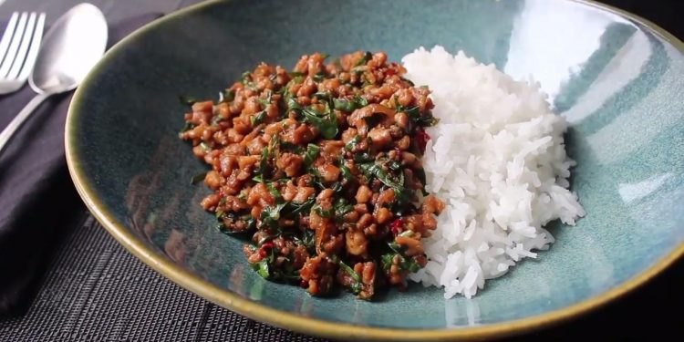

Pad Krapow Gai

Spicy Thai Basil Chicken (Pad Krapow Gai)
A traditional Thai dish that consists of meat such as pork, chicken, beef, and seafood stir-fried with Thai holy basil and garlic. It is served with rice and topped up (optional) with fried eggs or khai dao. The main seasonings are soy sauce, Thai fish sauce, oyster sauce (optional), cane sugar, and bird's eye chili.
Ingridients
- ⅓ cup chicken broth
- 1 tablespoon oyster sauce
- 1 tablespoon soy sauce, or as needed
- 2 teaspoons fish sauce
- 1 teaspoon white sugar
- 1 teaspoon brown sugar
- 2 tablespoons vegetable oil
- 1 pound skinless, boneless chicken thighs, coarsely chopped
- ¼ cup sliced shallots
- 4 cloves garlic, minced
- 2 tablespoons minced Thai chilies, Serrano, or other hot pepper
- 1 cup very thinly sliced fresh basil leaves
- 2 cups hot cooked rice
Steps
- Gather ingredients.
- Whisk chicken broth, oyster sauce, soy sauce, fish sauce, white sugar, and brown sugar together in a bowl until well blended.
- Heat large skillet over high heat. Drizzle in oil. Add chicken and stir fry until it loses its raw color, 2 to 3 minutes.
- Stir in shallots, garlic, and sliced chilies. Continue cooking on high heat until some of the juices start to caramelize in the bottom of the pan, about 2 or 3 more minutes.
- Add about a tablespoon of the sauce mixture to the skillet; cook and stir until sauce begins to caramelize, about 1 minute.
- Pour in the rest of the sauce. Cook and stir until sauce has deglazed the bottom of the pan. Continue to cook until sauce glazes onto the meat, 1 or 2 more minutes. Remove from heat.
- Stir in basil. Cook and stir until basil is wilted, about 20 seconds. Serve with rice.
- Serve hot and enjoy!
See the original recipe here